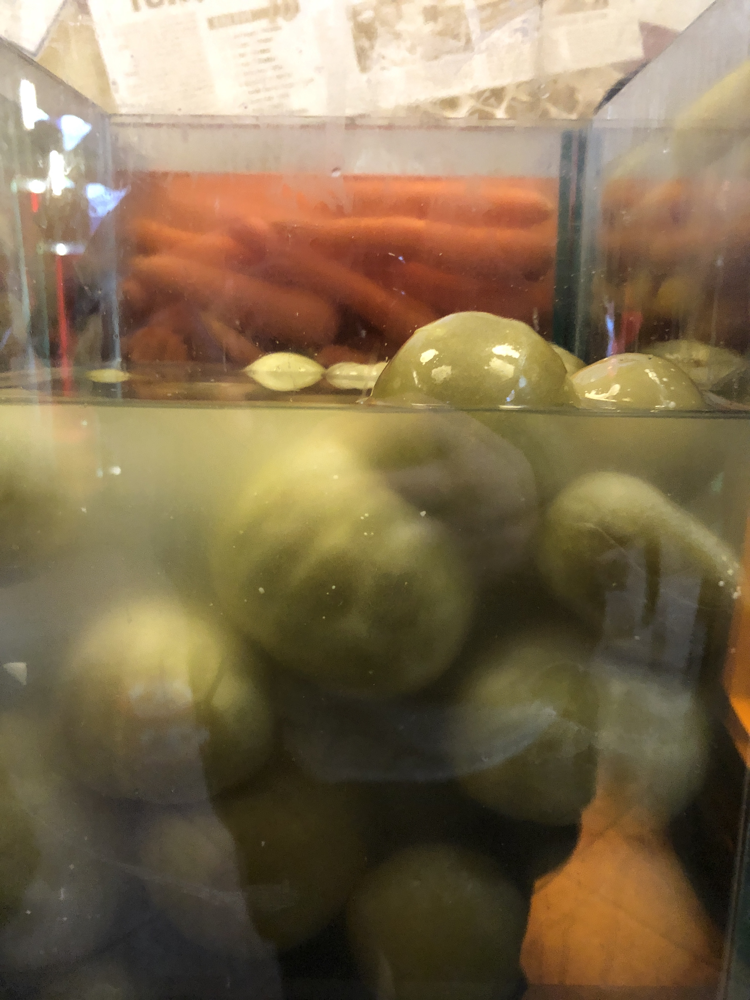

Asri Turşucu
Just call it the amazing pickle place. Everyone will know.
You walk past the window and you stop. Wall-to-wall jars with red-checked lids, stacked floor to ceiling — pickled green tomatoes, carrots, beans, peppers, cucumbers, things you can't identify and need to try. The yellow taxi reflected in the glass. Since 1938, says the logo. You go in.
This is not the pickle you know. We're not talking a half sour spear on the side of a sandwich. Turkish fermentation is its own thing — vinegary, deeply savoury, the kind of flavour that makes everything you eat alongside it taste better. Asri Turşucu has been perfecting it for nearly ninety years and they have the newspaper clippings on the wall to prove it.
"If you like pickled things, this place will bring you joy."

Get a selection to take home — the pickled green tomatoes are the move, but point at things and see what happens. Eat them over the next few days with whatever you're cooking. They make a mediocre meal good and a good meal great.

- Just point at things — the staff are used to it and the selection is the fun
- Pickled green tomatoes are the standout but get a mix
- Buy more than you think you need — they travel well and last
- In Beyoğlu, near Çukurcuma — combine with a walk through the antique district
- The pronunciation is "Ahs-ree Toor-shoo-joo" but honestly just say "the pickle place" and anyone in Istanbul will know